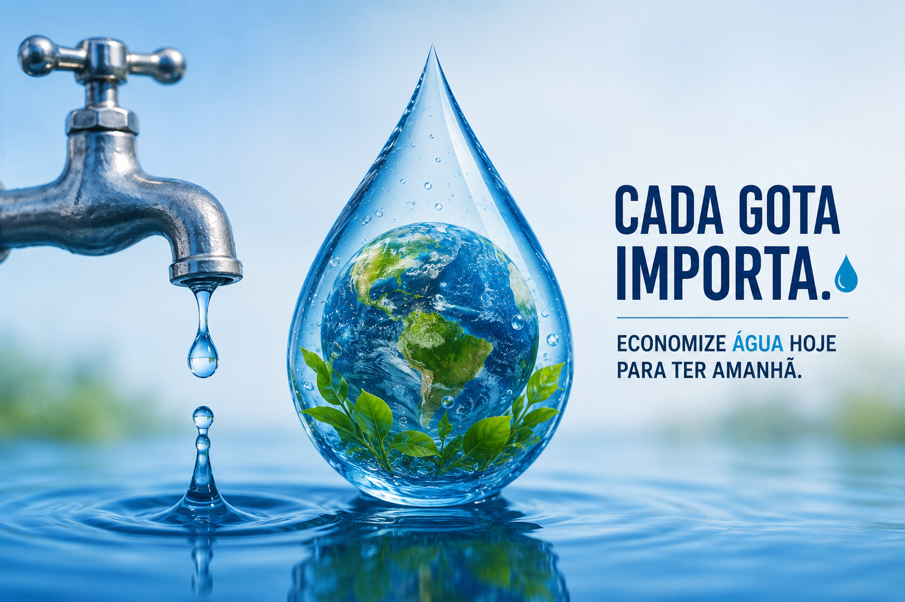

Introdução
A água potável é um recurso essencial para a vida. Ela é utilizada para beber, cozinhar, tomar banho, produzir alimentos e realizar diversas atividades do dia a dia. Apesar de parecer abundante, apenas uma pequena parte da água do planeta pode ser consumida pelas pessoas. Por isso, evitar o desperdício é muito importante.
O desperdício da água
O desperdício acontece quando utilizamos mais água do que realmente precisamos. Deixar a torneira aberta, tomar banhos demorados e não consertar vazamentos são exemplos de atitudes que aumentam o consumo de água e prejudicam o meio ambiente.
Cálculos
Um banho de aproximadamente 15 minutos pode gastar cerca de 135 litros de água.
Uma torneira pingando pode desperdiçar aproximadamente 40 litros de água por dia.
Em 30 dias, esse desperdício pode chegar a 1.200 litros de água.
Em um ano, esse valor pode ultrapassar 14.000 litros de água desperdiçados.
Metas para economizar água
- Reduzir o banho para até 5 minutos.
- Fechar a torneira ao escovar os dentes.
- Consertar vazamentos rapidamente.
- Reutilizar água sempre que possível.
- Evitar lavar calçadas utilizando mangueira.
- Economizar pelo menos 20% do consumo de água em casa.
Benefícios da economia de água
Economizar água ajuda a preservar rios, lagos e nascentes. Além disso, reduz o valor da conta de água e garante que esse recurso continue disponível para as futuras gerações.
Conclusão
Cada pessoa pode fazer a sua parte para diminuir o desperdício da água potável. Pequenas atitudes realizadas todos os dias fazem uma grande diferença para o meio ambiente e para a qualidade de vida de toda a população.